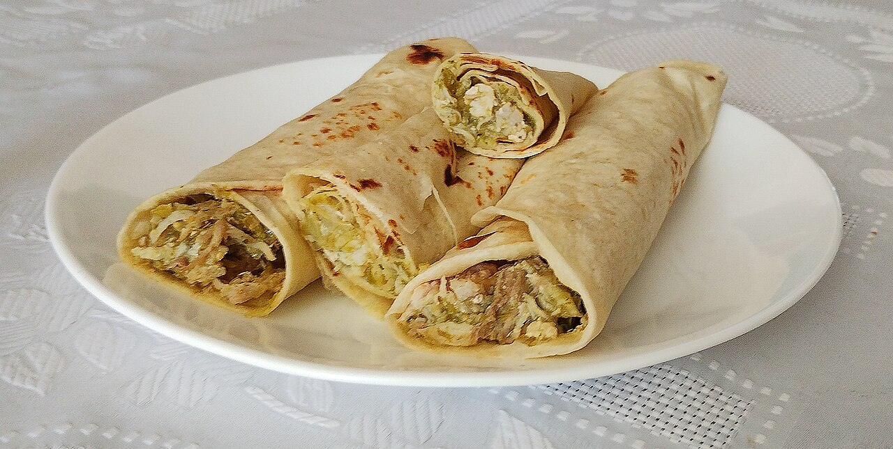

Home
Burrito Recipe

A burrito is a Mexican and Tex-Mex dish consisting of a flour tortilla wrapped around a filling, which traditionally includes meat, beans, and cheese, but can also include vegetables and other ingredients
This burrito recipe is quick, customizable, and full of flavor — perfect for lunch or dinner. You can fill it with your favorite ingredients and enjoy it wrapped in a warm tortilla.
Ingredients
- 4 large flour tortillas
- 500 grams (1 lb) of ground beef or chicken
- 1 tablespoon of vegetable oil
- 1 small onion, chopped
- 2 cloves of garlic, minced
- 1 teaspoon of ground cumin
- 1 teaspoon of chili powder
- Salt and pepper to taste
- 1 cup of cooked rice
- 1 cup of black beans or refried beans
- 1 cup of shredded cheese (cheddar or Mexican blend)
- 1 tomato, diced
- 1/2 cup of corn kernels (optional)
- 1/2 cup of sour cream
- 1/2 cup of salsa or pico de gallo
- Fresh lettuce or chopped cilantro for garnish
Instructions
- Heat the vegetable oil in a large skillet over medium heat.
- Add the chopped onion and minced garlic, and sauté until fragrant and translucent.
- Add the ground beef or chicken. Cook until browned, breaking it apart with a spoon.
- Season with ground cumin, chili powder, salt, and pepper. Stir well to combine.
- Stir in the cooked rice, beans, and corn (if using). Mix until heated through, then remove from heat.
- Warm the flour tortillas on a skillet or in the microwave until soft and pliable.
- Place a portion of the filling in the center of each tortilla.
- Top with shredded cheese, diced tomato, lettuce, sour cream, and salsa or pico de gallo.
- Fold in the sides of the tortilla, then roll it up tightly from the bottom to form a burrito.
- Serve warm, optionally toasting the burrito on a skillet for a crispy exterior.